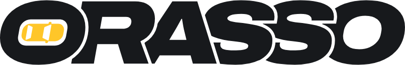

2 · Signature : une par écran, en bas à droite de l'objet principal
Nissan 200SX S14
8 événements · dernier : Nocturne de Canet
ORASSOProchain accès · J-2
Nocturne de Canet
ORASSO3 · Site : logo en haut à gauche, « Propulsé par » en pied public
Événements · Pros · Connexion
Propulsé par OrassoConditionsContact

MSCMéditeSportCar
Tableau de bordCandidatures